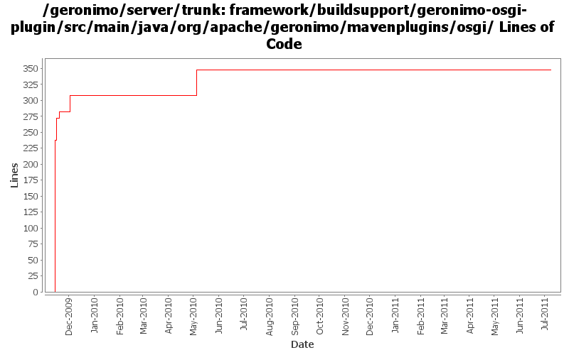

[root]/framework/buildsupport/geronimo-osgi-plugin/src/main/java/org/apache/geronimo/mavenplugins/osgi
 utils
(2 files, 723 lines)
utils
(2 files, 723 lines)

| Author | Changes | Lines of Code | Lines per Change |
|---|---|---|---|
| Totals | 8 (100.0%) | 379 (100.0%) | 47.3 |
| gawor | 7 (87.5%) | 377 (99.5%) | 53.8 |
| xuhaihong | 1 (12.5%) | 2 (0.5%) | 2.0 |
GERONIMO-6058 Replace StringBuffer usage with StringBuilder
2 lines of code changed in 1 file:
display attributes and directives in display-manifest goal
42 lines of code changed in 1 file:
display required bundles and fragment info
29 lines of code changed in 1 file:
update the plugin so that it can display manifest of a file specified on command line
5 lines of code changed in 1 file:
bunch of verify manifest improvments
17 lines of code changed in 1 file:
display more info about imports and exports
46 lines of code changed in 1 file:
Add plugin for validating the generated manifest against the dependencies (bundles) using the osgi rules. Plugin borrows code from Tuscany maven eclipse compiler module
238 lines of code changed in 2 files: